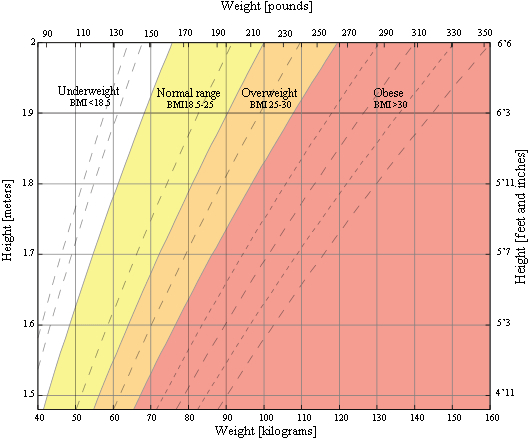

This is the World Health Organization's (WHO) recommended body weight based on BMI values for adults. It is used for both men and women, age 18 or older.
|
Category |
BMI range - kg/m2 |
|
Severe Thinness |
< 16 |
|
Moderate Thinness |
16 - 17 |
|
Mild Thinness |
17 - 18.5 |
|
Normal |
18.5 - 25 |
|
Overweight |
25 - 30 |
|
Obese Class I |
30 - 35 |
|
Obese Class II |
35 - 40 |
|
Obese Class III |
> 40 |
This is a graph of BMI categories based on the World Health Organization data. The dashed lines represent subdivisions within a major categorization.

The Centers for Disease Control and Prevention (CDC) recommends BMI categorization for children and teens between age 2 and 20.
|
Category |
Percentile Range |
|
Underweight |
<5% |
|
Healthy weight |
5% - 85% |
|
At risk of overweight |
85% - 95% |
|
Overweight |
>95% |